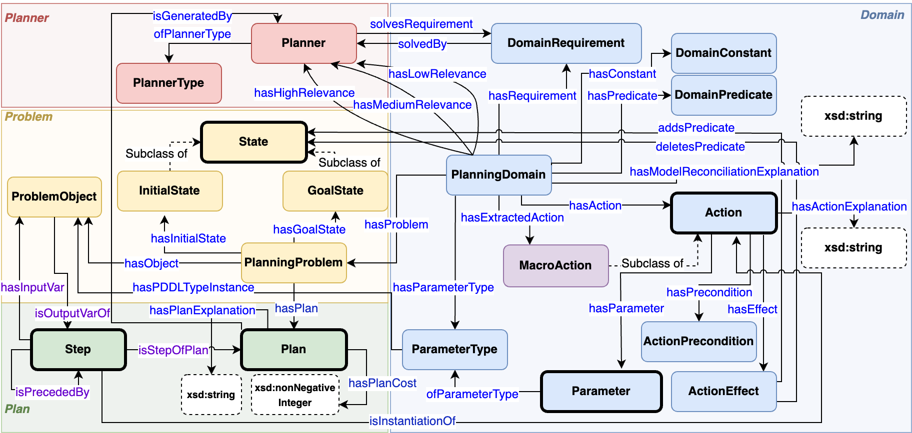

The field of Automated Planning has produced a staggering array of domain models and solving algorithms, historically standardized using the Planning Domain Definition Language (PDDL). However, planning frameworks structurally lack a shared vocabulary for communicating why a plan was chosen—the metadata, problem properties, and algorithm behaviors remain heavily implicit.
Without this rich semantics, it is exceedingly difficult to retrospectively reason about planner selection, trace performance outcomes based on instance configurations, or explain multi-agent path-finding execution loops to human supervisors.
PROV-O provenance metadata. By structuring data from the International Planning Competitions (IPC), PO transforms opaque logs into SPARQL-queryable knowledge graphs.

PO schema integrating planners, tasks, and plans.

Translating PDDL to RDF directly in Planning.Domains.
maPO captures these nuances distinctly: ma:Agent (aligned with IoT SOSA specs), ma:CollisionEvent, ma:ConflictAlert, and the core causal chain embedded in ma:ReplanningStrategy via PROV-O logic.
OMEGA Framework works as an agnostic pipeline taking execution states $\rightarrow$ assembling an RDF graph against \textit{maPO} schema $\rightarrow$ executing predefined SPARQL templates resolving the behavioral logic $\rightarrow$ surfacing human-readable contextual explanations tied accurately to grid animations mapping agent movements. Look at our AAAI-26 findings showing overwhelmingly superior clarity vs standard output traces (95.2% preference).

OMEGA: Explaining MAPF (Google Drive)
Our interactive walkthrough demonstrates OMEGA's ability to translate complex coordinate traces into human-readable causal explanations, helping users understand why agents collide or wait in dynamic environments.